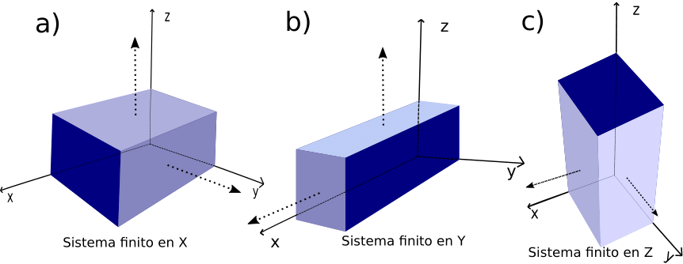

Hamiltoniano para semimetales de Weyl tipo I - Koshino #
El objetivo general de este notebook es explorar el Hamiltoniano presentado en el Review[1]
Los conceptos a introducir serán:
Hamiltoniano para un semimetal del Weyl y uno de punto nodal
Relación de dispersión generada por este tipo de materiales
A diferencia de los hamiltonianos explorados anteriormente, este es de una matriz de \(4x4\) porque considera al término de masa. Adicionalmente, este notebook se enfocara sólo en la fase correspondiente al semimemtal de Weyl tipo I.
Fuente: Mikito Koshino and Intan Fatimah Hizbullah Phys. Rev. B 93, 045201 – Published 4 January 2016; Erratum Phys. Rev. B 99, 209903 (2019)
Hamiltoniano del sistema #
Para poder computar los cálculos en la librería de PythTB[2] es necesario expresar a los momentos \(p_i=\sin(k_i)\) y consecuentemente, se puede expresar al \(\sin\) en su forma exponencial.
Fuente:S. Coh and D. Vanderbilt, Python Tight Binding (PythTB) — PythTB 1.7.2 documentation (2016)
Expresión de la forma exponencial#
Acerca de la notación:
\(b\): es el campo intrinseco de Zeeman
\(v\): es el parametro de velocidad.
\(m\): es la masa
Show code cell source
import glob
from matplotlib.ticker import (MultipleLocator,
FormatStrFormatter,
AutoMinorLocator)
from pylab import *
from pythtb import *
Show code cell source
mpl.rcParams.update({'font.size': 22, 'text.usetex': True})
mpl.rcParams.update({'axes.linewidth':1.5})
mpl.rcParams.update({'axes.labelsize':'large'})
mpl.rcParams.update({'xtick.major.size':12})
mpl.rcParams.update({'xtick.minor.size':6})
mpl.rcParams.update({'ytick.major.size':12})
mpl.rcParams.update({'ytick.minor.size':6})
mpl.rcParams.update({'xtick.major.width':1.5})
mpl.rcParams.update({'xtick.minor.width':1.0})
mpl.rcParams.update({'ytick.major.width':1.5})
mpl.rcParams.update({'ytick.minor.width':1.0})
Show code cell source
m = 0.7
b = 1.0
v = 1.0
a = 1.0
ħ = 1.0
##################----------------Inicia TB----------------##################
lat= [[a,0,0],[0,a,0],[0,0,a]]
orb= [[1/2,1/2,1/2],[0,0,0],[0,0,0],[1/2,1/2,1/2]] #H, solo los sitios A[000] B1/2[111]
PWSM = tb_model(3,3,lat,orb)
#FUERA DE LA DIAGONAL
#(0,2)=vhsink_z
PWSM.set_hop(+v*ħ/(2*1J), 0, 2, [0,0,1] )
PWSM.set_hop(-v*ħ/(2*1J), 0, 2, [0,0,-1])
#(1,3)=-vhsink_z
PWSM.set_hop(-v*ħ/(2*1J) ,1 , 3, [0,0,1])
PWSM.set_hop(+v*ħ/(2*1J) ,1 , 3, [0,0,-1])
#(0,3)X=vh sink_x-hiv sinky
PWSM.set_hop(+v*ħ/(2*1J) ,0 , 3, [+1,0,0])
PWSM.set_hop(-v*ħ/(2*1J),0 , 3, [-1,0,0])
#(0,3)Y=vh sink_x-hiv sinky
PWSM.set_hop(-v*ħ/2 ,0 , 3, [0,+1,0])
PWSM.set_hop(+v*ħ/2 ,0 , 3, [0,-1,0])
#(1,2)X=vh sink_x+hiv sinky
PWSM.set_hop(+v*ħ/(2*1J) ,1 , 2, [+1,0,0])
PWSM.set_hop(-v*ħ/(2*1J) ,1 , 2, [-1,0,0])
#(1,2)Y=vh sink_x+hiv sinky
PWSM.set_hop(+v*ħ/2 ,1 , 2, [0,+1,0])
PWSM.set_hop(-v*ħ/2 ,1 , 2, [0,-1,0])
#DIAGONAL
#m+b
PWSM.set_onsite([m+b,m-b,-m+b,-m-b]) # No hay hooping, es energia
###############---------Inicia extraccion de información-----------##############
k=[[0,0.0,0],[0,0,0.25],[0,0,0.5]]#Punto por los cuales que quiero que pase. Son los punto de al simetria
#unidades en unidades de V de red 1=2pi/a
#unidades en unidades de V de red 1=2pi/a
k_label=["-Z",r"$\Gamma$","Z"]
(k_vec,k_dist,k_node)=PWSM.k_path(k,1001,report=False)
Ek,U=PWSM.solve_all(k_vec,eig_vectors=True)
#######################---Graficos----######################
fig,ax = plt.subplots(ncols=2,nrows=1,figsize=(12,6),
gridspec_kw = {'wspace':0.4, 'hspace':0, 'width_ratios': [1, 1]})
ax[0].plot(k_dist,Ek[1,:],zorder=1,lw=1.5)
ax[0].plot(k_dist,Ek[2,:],zorder=1,lw=1.5)
ax[0].set_xticks(k_node) # puntos de alta simetria, valor que correspomde en k_path
ax[0].set_xticklabels(k_label )
# ax[0].set_yticks([-2,0.,2])
# xsticklabels(k_label)
ax[0].spines['right'].set_visible(False)
ax[0].spines['top'].set_visible(False)
ax[0].set_ylabel(r"$E[t]$",fontsize=26)
ax[0].set_xlabel(r"$K_z$",fontsize=26)
k=[[0,0,0],[0,0,0.5]] # Punto por los cuales que quiero que pase. Son los punto de al simetria
#unidades en unidades de V de red 1=2pi/a
(k_vec,k_dist,k_node)=PWSM.k_path(k,1001,report=False)
Ek,U=PWSM.solve_all(k_vec,eig_vectors=True)
ax[1].plot(k_dist,Ek[1,:],zorder=1,lw=1.5)
ax[1].plot(k_dist,Ek[2,:],zorder=1,lw=1.5)
# puntos de alta simetria, valor que correspomde en k_path
a=0.01
ax[1].set_yticks([-a,0.,a])
ax[1].set_ylim([-a,a])
ax[1].set_xlim([0.1,0.4])
# xsticklabels(k_label)
ax[1].spines['right'].set_visible(False)
ax[1].spines['top'].set_visible(False)
ax[1].set_ylabel(r"$E[t]$",fontsize=26)
ax[1].set_xlabel(r"$K_z$",fontsize=26)
savefig("WSMKoshinoBulkGap.pdf",bbox_inches="tight")
---------------------------------------------------------------------------
FileNotFoundError Traceback (most recent call last)
~/anaconda3/envs/jbook/lib/python3.9/site-packages/matplotlib/texmanager.py in _run_checked_subprocess(self, command, tex, cwd)
251 try:
--> 252 report = subprocess.check_output(
253 command, cwd=cwd if cwd is not None else self.texcache,
~/anaconda3/envs/jbook/lib/python3.9/subprocess.py in check_output(timeout, *popenargs, **kwargs)
423
--> 424 return run(*popenargs, stdout=PIPE, timeout=timeout, check=True,
425 **kwargs).stdout
~/anaconda3/envs/jbook/lib/python3.9/subprocess.py in run(input, capture_output, timeout, check, *popenargs, **kwargs)
504
--> 505 with Popen(*popenargs, **kwargs) as process:
506 try:
~/anaconda3/envs/jbook/lib/python3.9/subprocess.py in __init__(self, args, bufsize, executable, stdin, stdout, stderr, preexec_fn, close_fds, shell, cwd, env, universal_newlines, startupinfo, creationflags, restore_signals, start_new_session, pass_fds, user, group, extra_groups, encoding, errors, text, umask)
950
--> 951 self._execute_child(args, executable, preexec_fn, close_fds,
952 pass_fds, cwd, env,
~/anaconda3/envs/jbook/lib/python3.9/subprocess.py in _execute_child(self, args, executable, preexec_fn, close_fds, pass_fds, cwd, env, startupinfo, creationflags, shell, p2cread, p2cwrite, c2pread, c2pwrite, errread, errwrite, restore_signals, gid, gids, uid, umask, start_new_session)
1820 err_msg = os.strerror(errno_num)
-> 1821 raise child_exception_type(errno_num, err_msg, err_filename)
1822 raise child_exception_type(err_msg)
FileNotFoundError: [Errno 2] No such file or directory: 'latex'
The above exception was the direct cause of the following exception:
RuntimeError Traceback (most recent call last)
/tmp/ipykernel_190/3781295513.py in <module>
84 ax[1].set_xlabel(r"$K_z$",fontsize=26)
85
---> 86 savefig("WSMKoshinoBulkGap.pdf",bbox_inches="tight")
87
~/anaconda3/envs/jbook/lib/python3.9/site-packages/matplotlib/pyplot.py in savefig(*args, **kwargs)
964 def savefig(*args, **kwargs):
965 fig = gcf()
--> 966 res = fig.savefig(*args, **kwargs)
967 fig.canvas.draw_idle() # need this if 'transparent=True' to reset colors
968 return res
~/anaconda3/envs/jbook/lib/python3.9/site-packages/matplotlib/figure.py in savefig(self, fname, transparent, **kwargs)
3013 patch.set_edgecolor('none')
3014
-> 3015 self.canvas.print_figure(fname, **kwargs)
3016
3017 if transparent:
~/anaconda3/envs/jbook/lib/python3.9/site-packages/matplotlib/backend_bases.py in print_figure(self, filename, dpi, facecolor, edgecolor, orientation, format, bbox_inches, pad_inches, bbox_extra_artists, backend, **kwargs)
2228 else suppress())
2229 with ctx:
-> 2230 self.figure.draw(renderer)
2231
2232 if bbox_inches:
~/anaconda3/envs/jbook/lib/python3.9/site-packages/matplotlib/artist.py in draw_wrapper(artist, renderer, *args, **kwargs)
72 @wraps(draw)
73 def draw_wrapper(artist, renderer, *args, **kwargs):
---> 74 result = draw(artist, renderer, *args, **kwargs)
75 if renderer._rasterizing:
76 renderer.stop_rasterizing()
~/anaconda3/envs/jbook/lib/python3.9/site-packages/matplotlib/artist.py in draw_wrapper(artist, renderer, *args, **kwargs)
49 renderer.start_filter()
50
---> 51 return draw(artist, renderer, *args, **kwargs)
52 finally:
53 if artist.get_agg_filter() is not None:
~/anaconda3/envs/jbook/lib/python3.9/site-packages/matplotlib/figure.py in draw(self, renderer)
2788
2789 self.patch.draw(renderer)
-> 2790 mimage._draw_list_compositing_images(
2791 renderer, self, artists, self.suppressComposite)
2792
~/anaconda3/envs/jbook/lib/python3.9/site-packages/matplotlib/image.py in _draw_list_compositing_images(renderer, parent, artists, suppress_composite)
130 if not_composite or not has_images:
131 for a in artists:
--> 132 a.draw(renderer)
133 else:
134 # Composite any adjacent images together
~/anaconda3/envs/jbook/lib/python3.9/site-packages/matplotlib/artist.py in draw_wrapper(artist, renderer, *args, **kwargs)
49 renderer.start_filter()
50
---> 51 return draw(artist, renderer, *args, **kwargs)
52 finally:
53 if artist.get_agg_filter() is not None:
~/anaconda3/envs/jbook/lib/python3.9/site-packages/matplotlib/_api/deprecation.py in wrapper(*inner_args, **inner_kwargs)
429 else deprecation_addendum,
430 **kwargs)
--> 431 return func(*inner_args, **inner_kwargs)
432
433 return wrapper
~/anaconda3/envs/jbook/lib/python3.9/site-packages/matplotlib/axes/_base.py in draw(self, renderer, inframe)
2919 renderer.stop_rasterizing()
2920
-> 2921 mimage._draw_list_compositing_images(renderer, self, artists)
2922
2923 renderer.close_group('axes')
~/anaconda3/envs/jbook/lib/python3.9/site-packages/matplotlib/image.py in _draw_list_compositing_images(renderer, parent, artists, suppress_composite)
130 if not_composite or not has_images:
131 for a in artists:
--> 132 a.draw(renderer)
133 else:
134 # Composite any adjacent images together
~/anaconda3/envs/jbook/lib/python3.9/site-packages/matplotlib/artist.py in draw_wrapper(artist, renderer, *args, **kwargs)
49 renderer.start_filter()
50
---> 51 return draw(artist, renderer, *args, **kwargs)
52 finally:
53 if artist.get_agg_filter() is not None:
~/anaconda3/envs/jbook/lib/python3.9/site-packages/matplotlib/axis.py in draw(self, renderer, *args, **kwargs)
1140
1141 ticks_to_draw = self._update_ticks()
-> 1142 ticklabelBoxes, ticklabelBoxes2 = self._get_tick_bboxes(ticks_to_draw,
1143 renderer)
1144
~/anaconda3/envs/jbook/lib/python3.9/site-packages/matplotlib/axis.py in _get_tick_bboxes(self, ticks, renderer)
1066 def _get_tick_bboxes(self, ticks, renderer):
1067 """Return lists of bboxes for ticks' label1's and label2's."""
-> 1068 return ([tick.label1.get_window_extent(renderer)
1069 for tick in ticks if tick.label1.get_visible()],
1070 [tick.label2.get_window_extent(renderer)
~/anaconda3/envs/jbook/lib/python3.9/site-packages/matplotlib/axis.py in <listcomp>(.0)
1066 def _get_tick_bboxes(self, ticks, renderer):
1067 """Return lists of bboxes for ticks' label1's and label2's."""
-> 1068 return ([tick.label1.get_window_extent(renderer)
1069 for tick in ticks if tick.label1.get_visible()],
1070 [tick.label2.get_window_extent(renderer)
~/anaconda3/envs/jbook/lib/python3.9/site-packages/matplotlib/text.py in get_window_extent(self, renderer, dpi)
901
902 with cbook._setattr_cm(self.figure, dpi=dpi):
--> 903 bbox, info, descent = self._get_layout(self._renderer)
904 x, y = self.get_unitless_position()
905 x, y = self.get_transform().transform((x, y))
~/anaconda3/envs/jbook/lib/python3.9/site-packages/matplotlib/text.py in _get_layout(self, renderer)
304
305 # Full vertical extent of font, including ascenders and descenders:
--> 306 _, lp_h, lp_d = renderer.get_text_width_height_descent(
307 "lp", self._fontproperties,
308 ismath="TeX" if self.get_usetex() else False)
~/anaconda3/envs/jbook/lib/python3.9/site-packages/matplotlib/backends/_backend_pdf_ps.py in get_text_width_height_descent(self, s, prop, ismath)
86 texmanager = self.get_texmanager()
87 fontsize = prop.get_size_in_points()
---> 88 w, h, d = texmanager.get_text_width_height_descent(
89 s, fontsize, renderer=self)
90 return w, h, d
~/anaconda3/envs/jbook/lib/python3.9/site-packages/matplotlib/texmanager.py in get_text_width_height_descent(self, tex, fontsize, renderer)
397 else:
398 # use dviread.
--> 399 dvifile = self.make_dvi(tex, fontsize)
400 with dviread.Dvi(dvifile, 72 * dpi_fraction) as dvi:
401 page, = dvi
~/anaconda3/envs/jbook/lib/python3.9/site-packages/matplotlib/texmanager.py in make_dvi(self, tex, fontsize)
289 # and thus replace() works atomically.
290 with TemporaryDirectory(dir=Path(dvifile).parent) as tmpdir:
--> 291 self._run_checked_subprocess(
292 ["latex", "-interaction=nonstopmode", "--halt-on-error",
293 texfile], tex, cwd=tmpdir)
~/anaconda3/envs/jbook/lib/python3.9/site-packages/matplotlib/texmanager.py in _run_checked_subprocess(self, command, tex, cwd)
254 stderr=subprocess.STDOUT)
255 except FileNotFoundError as exc:
--> 256 raise RuntimeError(
257 'Failed to process string with tex because {} could not be '
258 'found'.format(command[0])) from exc
RuntimeError: Failed to process string with tex because latex could not be found
---------------------------------------------------------------------------
FileNotFoundError Traceback (most recent call last)
~/anaconda3/envs/jbook/lib/python3.9/site-packages/matplotlib/texmanager.py in _run_checked_subprocess(self, command, tex, cwd)
251 try:
--> 252 report = subprocess.check_output(
253 command, cwd=cwd if cwd is not None else self.texcache,
~/anaconda3/envs/jbook/lib/python3.9/subprocess.py in check_output(timeout, *popenargs, **kwargs)
423
--> 424 return run(*popenargs, stdout=PIPE, timeout=timeout, check=True,
425 **kwargs).stdout
~/anaconda3/envs/jbook/lib/python3.9/subprocess.py in run(input, capture_output, timeout, check, *popenargs, **kwargs)
504
--> 505 with Popen(*popenargs, **kwargs) as process:
506 try:
~/anaconda3/envs/jbook/lib/python3.9/subprocess.py in __init__(self, args, bufsize, executable, stdin, stdout, stderr, preexec_fn, close_fds, shell, cwd, env, universal_newlines, startupinfo, creationflags, restore_signals, start_new_session, pass_fds, user, group, extra_groups, encoding, errors, text, umask)
950
--> 951 self._execute_child(args, executable, preexec_fn, close_fds,
952 pass_fds, cwd, env,
~/anaconda3/envs/jbook/lib/python3.9/subprocess.py in _execute_child(self, args, executable, preexec_fn, close_fds, pass_fds, cwd, env, startupinfo, creationflags, shell, p2cread, p2cwrite, c2pread, c2pwrite, errread, errwrite, restore_signals, gid, gids, uid, umask, start_new_session)
1820 err_msg = os.strerror(errno_num)
-> 1821 raise child_exception_type(errno_num, err_msg, err_filename)
1822 raise child_exception_type(err_msg)
FileNotFoundError: [Errno 2] No such file or directory: 'latex'
The above exception was the direct cause of the following exception:
RuntimeError Traceback (most recent call last)
~/anaconda3/envs/jbook/lib/python3.9/site-packages/IPython/core/formatters.py in __call__(self, obj)
339 pass
340 else:
--> 341 return printer(obj)
342 # Finally look for special method names
343 method = get_real_method(obj, self.print_method)
~/anaconda3/envs/jbook/lib/python3.9/site-packages/IPython/core/pylabtools.py in print_figure(fig, fmt, bbox_inches, base64, **kwargs)
149 FigureCanvasBase(fig)
150
--> 151 fig.canvas.print_figure(bytes_io, **kw)
152 data = bytes_io.getvalue()
153 if fmt == 'svg':
~/anaconda3/envs/jbook/lib/python3.9/site-packages/matplotlib/backend_bases.py in print_figure(self, filename, dpi, facecolor, edgecolor, orientation, format, bbox_inches, pad_inches, bbox_extra_artists, backend, **kwargs)
2228 else suppress())
2229 with ctx:
-> 2230 self.figure.draw(renderer)
2231
2232 if bbox_inches:
~/anaconda3/envs/jbook/lib/python3.9/site-packages/matplotlib/artist.py in draw_wrapper(artist, renderer, *args, **kwargs)
72 @wraps(draw)
73 def draw_wrapper(artist, renderer, *args, **kwargs):
---> 74 result = draw(artist, renderer, *args, **kwargs)
75 if renderer._rasterizing:
76 renderer.stop_rasterizing()
~/anaconda3/envs/jbook/lib/python3.9/site-packages/matplotlib/artist.py in draw_wrapper(artist, renderer, *args, **kwargs)
49 renderer.start_filter()
50
---> 51 return draw(artist, renderer, *args, **kwargs)
52 finally:
53 if artist.get_agg_filter() is not None:
~/anaconda3/envs/jbook/lib/python3.9/site-packages/matplotlib/figure.py in draw(self, renderer)
2788
2789 self.patch.draw(renderer)
-> 2790 mimage._draw_list_compositing_images(
2791 renderer, self, artists, self.suppressComposite)
2792
~/anaconda3/envs/jbook/lib/python3.9/site-packages/matplotlib/image.py in _draw_list_compositing_images(renderer, parent, artists, suppress_composite)
130 if not_composite or not has_images:
131 for a in artists:
--> 132 a.draw(renderer)
133 else:
134 # Composite any adjacent images together
~/anaconda3/envs/jbook/lib/python3.9/site-packages/matplotlib/artist.py in draw_wrapper(artist, renderer, *args, **kwargs)
49 renderer.start_filter()
50
---> 51 return draw(artist, renderer, *args, **kwargs)
52 finally:
53 if artist.get_agg_filter() is not None:
~/anaconda3/envs/jbook/lib/python3.9/site-packages/matplotlib/_api/deprecation.py in wrapper(*inner_args, **inner_kwargs)
429 else deprecation_addendum,
430 **kwargs)
--> 431 return func(*inner_args, **inner_kwargs)
432
433 return wrapper
~/anaconda3/envs/jbook/lib/python3.9/site-packages/matplotlib/axes/_base.py in draw(self, renderer, inframe)
2919 renderer.stop_rasterizing()
2920
-> 2921 mimage._draw_list_compositing_images(renderer, self, artists)
2922
2923 renderer.close_group('axes')
~/anaconda3/envs/jbook/lib/python3.9/site-packages/matplotlib/image.py in _draw_list_compositing_images(renderer, parent, artists, suppress_composite)
130 if not_composite or not has_images:
131 for a in artists:
--> 132 a.draw(renderer)
133 else:
134 # Composite any adjacent images together
~/anaconda3/envs/jbook/lib/python3.9/site-packages/matplotlib/artist.py in draw_wrapper(artist, renderer, *args, **kwargs)
49 renderer.start_filter()
50
---> 51 return draw(artist, renderer, *args, **kwargs)
52 finally:
53 if artist.get_agg_filter() is not None:
~/anaconda3/envs/jbook/lib/python3.9/site-packages/matplotlib/axis.py in draw(self, renderer, *args, **kwargs)
1140
1141 ticks_to_draw = self._update_ticks()
-> 1142 ticklabelBoxes, ticklabelBoxes2 = self._get_tick_bboxes(ticks_to_draw,
1143 renderer)
1144
~/anaconda3/envs/jbook/lib/python3.9/site-packages/matplotlib/axis.py in _get_tick_bboxes(self, ticks, renderer)
1066 def _get_tick_bboxes(self, ticks, renderer):
1067 """Return lists of bboxes for ticks' label1's and label2's."""
-> 1068 return ([tick.label1.get_window_extent(renderer)
1069 for tick in ticks if tick.label1.get_visible()],
1070 [tick.label2.get_window_extent(renderer)
~/anaconda3/envs/jbook/lib/python3.9/site-packages/matplotlib/axis.py in <listcomp>(.0)
1066 def _get_tick_bboxes(self, ticks, renderer):
1067 """Return lists of bboxes for ticks' label1's and label2's."""
-> 1068 return ([tick.label1.get_window_extent(renderer)
1069 for tick in ticks if tick.label1.get_visible()],
1070 [tick.label2.get_window_extent(renderer)
~/anaconda3/envs/jbook/lib/python3.9/site-packages/matplotlib/text.py in get_window_extent(self, renderer, dpi)
901
902 with cbook._setattr_cm(self.figure, dpi=dpi):
--> 903 bbox, info, descent = self._get_layout(self._renderer)
904 x, y = self.get_unitless_position()
905 x, y = self.get_transform().transform((x, y))
~/anaconda3/envs/jbook/lib/python3.9/site-packages/matplotlib/text.py in _get_layout(self, renderer)
304
305 # Full vertical extent of font, including ascenders and descenders:
--> 306 _, lp_h, lp_d = renderer.get_text_width_height_descent(
307 "lp", self._fontproperties,
308 ismath="TeX" if self.get_usetex() else False)
~/anaconda3/envs/jbook/lib/python3.9/site-packages/matplotlib/backends/backend_agg.py in get_text_width_height_descent(self, s, prop, ismath)
227 texmanager = self.get_texmanager()
228 fontsize = prop.get_size_in_points()
--> 229 w, h, d = texmanager.get_text_width_height_descent(
230 s, fontsize, renderer=self)
231 return w, h, d
~/anaconda3/envs/jbook/lib/python3.9/site-packages/matplotlib/texmanager.py in get_text_width_height_descent(self, tex, fontsize, renderer)
397 else:
398 # use dviread.
--> 399 dvifile = self.make_dvi(tex, fontsize)
400 with dviread.Dvi(dvifile, 72 * dpi_fraction) as dvi:
401 page, = dvi
~/anaconda3/envs/jbook/lib/python3.9/site-packages/matplotlib/texmanager.py in make_dvi(self, tex, fontsize)
289 # and thus replace() works atomically.
290 with TemporaryDirectory(dir=Path(dvifile).parent) as tmpdir:
--> 291 self._run_checked_subprocess(
292 ["latex", "-interaction=nonstopmode", "--halt-on-error",
293 texfile], tex, cwd=tmpdir)
~/anaconda3/envs/jbook/lib/python3.9/site-packages/matplotlib/texmanager.py in _run_checked_subprocess(self, command, tex, cwd)
254 stderr=subprocess.STDOUT)
255 except FileNotFoundError as exc:
--> 256 raise RuntimeError(
257 'Failed to process string with tex because {} could not be '
258 'found'.format(command[0])) from exc
RuntimeError: Failed to process string with tex because latex could not be found
<Figure size 864x432 with 2 Axes>
En este Hamiltoniano se observa una relacion de dispersion propia d eun semimetal de Weyl tipo I. Adicionalmente, se observa una brecha energetica alrededor de \(E[t]=0\)
Ahora se analizará el comportamiento de la estructura de bandas en un sistema finito en una dirección e infinito en dos direcciones
Exploración de las bandas de semimetal de Weyl#
Para estudiar cómo se comportan las bandas en distintos planos del material, es necesario pensr que nuestro muestra es un sistema cubico infinito, es decir tiene simetria de traslación en la dirección \(X, Y,Z\). Ahora, si se desea estudiar al sistema en \(X\), se debe cortar en esa dirección, es decir, se debe romper la simetria de traslación en \(X\), pero amnteniendola en \(Y\) y en \(Z\). Esto mismo aplica cuandos e quieres estudiar en \(Y\) y \(Z\), se deben romper las simetrías respectivas.

Show code cell source
NY_WSM=PWSM.cut_piece(100,1,glue_edgs=False)
NX_WSM=PWSM.cut_piece(100,0,glue_edgs=False)
NZ_WSM=PWSM.cut_piece(100,2,glue_edgs=False)
Show code cell source
k=[[0,0.0],[0.0,0.25],[0,.5]]
k_label1=[r"$-Z$",r"$\Gamma$",r"$Z$"hide-input]
(k_vec,k_dist,k_node)=NX_WSM.k_path(k,101, report=False)
EkfinX=NX_WSM.solve_all(k_vec)
k=[[0,0.0],[0.25,0],[.5,0]]
k_label2=[r"$-X$",r"$\Gamma$",r"$X$"]
(k_vec,k_dist,k_node)=NY_WSM.k_path(k,101, report=False)
EkfinY=NY_WSM.solve_all(k_vec)
k_label3=[r"$-Y$",r"$\Gamma$",r"$Y$"]
(k_vec,k_dist,k_node)=NY_WSM.k_path(k,101, report=False)
EkfinZ=NZ_WSM.solve_all(k_vec)
Show code cell source
fig,ax = plt.subplots(ncols=3,nrows=1,figsize=(20,6),
gridspec_kw = {'wspace':0.2, 'hspace':0, 'width_ratios': [1, 1,1]})
for n in range(0, len(EkfinX)):
ax[0].plot(k_dist,EkfinX[n,:], c='purple', alpha=0.6) #la long de Ek fin tiene todo
ax[1].plot(k_dist,EkfinY[n,:], c='purple', alpha=0.6) #la long de Ek fin tiene todo
ax[2].plot(k_dist,EkfinZ[n,:], c='purple', alpha=0.6) #la long de Ek fin tiene todo
for i in range(0,3):
ax[i].set_xticks(k_node) # puntos de alta simetria, valor que correspomde en k_path
ax[i].set_yticks([-2,0.,2])
# xsticklabels(k_label)
ax[i].spines['right'].set_visible(False)
ax[i].spines['top'].set_visible(False)
ax[0].set_xticklabels(k_label1 )
ax[1].set_xticklabels(k_label2 )
ax[2].set_xticklabels(k_label3 )
ax[0].set_ylabel(r"$E[t]$",fontsize=26)
ax[0].set_xlabel(r"Finite System in $X|_{K_Y=0}$",fontsize=26)
ax[1].set_xlabel(r"Finite System in $Y|_{K_X=0}$",fontsize=26)
ax[2].set_xlabel(r"Finite System in $Z|_{K_X=0}$",fontsize=26)
# puntos de alta simetria, valor que correspomde en k_path
savefig("Finite_systems_Koshino.pdf",bbox_inches='tight')
Se denota que los conos de Dirac sólo aparecen cuando el sistema es finito en la dirección \(X\) y con un recorrido en \(Z\). Sin embargo, no hay estados de superficie.